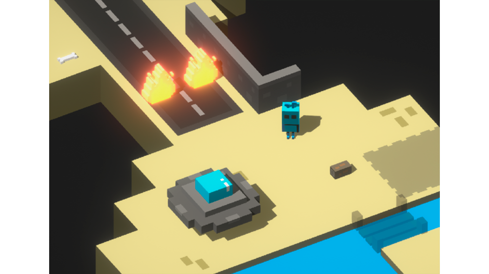
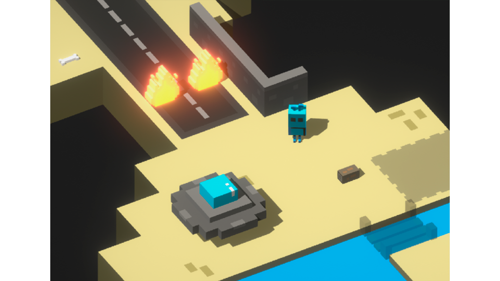

Replanet

El juego fue creado para la Global Gamejam 2020 en su sede de Madrid. Recibió los premios de mejor juego valorado por el jurado y mejor juego valorado por los asistentes, por lo que se convirtió en el juego ganador de la Game Jam. También ganó la primera edición de los premios Levelea.
El juego está realizado por siete estudiantes de la carrera de Desarrollo de Videojuegos de la Universidad Complutense de Madrid, los cuales son First Try Studios_ (Marcos, Rodrigo y Kelvin), Sergio Gavilán, Alberto Córdoba y Alejandro Villar.
Aunque podéis encontrar la descarga directa abajo, también podéis descargarlo desde el itch.io de First Try Studios_.
Todo el juego está hecho por nosotros con Unity3D, tanto a nivel de arte como sonido y programación durante una Gamejam de 48 horas.
Imágenes del juego

 

¿Cómo instalarlo?
Descarga el archivo .zip, extrae los archivos en una carpeta dependiendo de tu sistema operativo y a jugar!
También puedes descargarlo a través de la página oficial de la Global Gamejam 2020